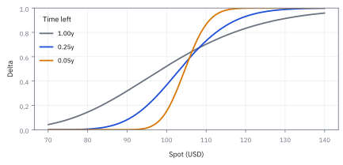
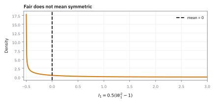

13.3 The Itô Integral
Itô integral คือกำไรสะสมของการถือสถานะที่ตั้งก่อนราคาขยับ ถ้าเผลออ่านสถานะที่ปลายท่อน จะได้กำไรปลอมเท่ากับผลรวมกำลังสองของการขยับ ซึ่งเฉลี่ยเท่ากับเวลาที่ผ่านไป
ทีม quant ทดสอบโค้ด backtest กับตลาดปลอมที่รู้แน่ว่าไม่มี edge: ราคา SPY เริ่มที่ \$520 และขยับแบบ Brownian motion ไม่มี drift ด้วยความผันผวน \$93.60 ต่อ $\sqrt{\text{yr}}$ (18% ของ \$520) กลยุทธ์ momentum ถือ 100 หุ้นต่อทุก \$1 ที่ราคาอยู่เหนือ \$520 (ต่ำกว่าก็ short) ปรับทุกวัน รันหนึ่งปี 20,000 เส้นทาง โค้ดรายงานว่ากำไรเฉลี่ย \$876,096 ต่อปี และไม่มีเส้นทางไหนขาดทุนเลย กลยุทธ์นี้ดีจริงไหม?
ลองตอบก่อนเปิดเฉลย
ไม่ ตลาดนี้ไม่มี edge กลยุทธ์ที่ทำได้จริงต้องได้เฉลี่ย \$0 โค้ดตั้งสถานะด้วยราคาปิดของวันเดียวกับที่คิดกำไร คือรู้ผลก่อนถือ กำไรปลอมเท่ากับ 100 คูณผลรวมของ $(\Delta S)^2$ ซึ่งเฉลี่ย $100\times93.6^2=\$876{,}096$ พอดี และเพราะเป็นผลรวมกำลังสองจึงบวกทุกเส้นทาง ส่วนกลยุทธ์ที่ถูกต้องเฉลี่ย \$0 แต่ขาดทุนใน 68% ของเส้นทาง
สิ่งที่เราจะสร้าง
13.1 พบว่าผลรวม $\sum2W_{i-1}\Delta W_i$ ที่ใช้ตัวคูณต้นท่อนเฉลี่ยศูนย์ แต่ถ้าใช้ตัวคูณปลายท่อนจะได้ค่าอื่น 13.2 เขียน SDE เป็น $dX=a\,dt+b\,dW$ โดยยังไม่ได้บอกว่า “integral ของ $b\,dW$” แปลว่าอะไร หน้านี้ปิดทั้งสองเรื่อง: นิยาม Itô integral ว่าอ่านตัวคูณที่ต้นท่อนเสมอ และแสดงว่านั่นคือกำไรสะสมของการเทรดที่ทำได้จริง
เริ่มจากสี่ก้าวด้วยมือทั้งสองแบบ วัดว่าต่างกันเท่าไร นิยาม แล้วพิสูจน์สองสมบัติที่ใช้ตลอดบท: ค่าเฉลี่ยเป็นศูนย์ และความเสี่ยงหาได้จาก Itô isometry จากนั้นตอบโจทย์ backtest เป็นดอลลาร์ ตรวจด้วยการสุ่ม และจบที่ P&L ของการ hedge
ศัพท์ที่ใช้ในหัวข้อนี้
- Itô integral
- ขีดจำกัดของผลรวม $\sum H_{i-1}\Delta W_i$ ที่อ่านตัวคูณที่ต้นท่อน เมื่อซอยเวลาละเอียดขึ้น ใช้แทนกำไรสะสมของการถือ $H$ หน่วยบนสิ่งที่ขยับตาม $W$ และเป็นความหมายของพจน์ $\int b\,dW$ ใน SDE ทุกตัว
- Adapted
- สมบัติของตัวคูณ $H_t$ ที่คำนวณได้จากข้อมูลถึงเวลา $t$ เท่านั้น ใช้บังคับให้กฎการเทรดทำได้จริง ในโค้ดแปลว่าสถานะของแถว $i$ ใช้ได้แค่ข้อมูลถึงแถว $i-1$
- Look-ahead bias
- ความผิดที่เอาข้อมูลที่ยังไม่เกิดมาตัดสินใจ ทำให้ backtest ดูดีเกินจริง หน้านี้วัดขนาดของมันได้ตรง ๆ
- Itô isometry
- สูตร $\mathbb E[(\int H\,dW)^2]=\int\mathbb E[H_t^2]\,dt$ ใช้หาความเสี่ยงของกำไรสะสมโดยไม่ต้องรู้รูปร่างทั้งก้อน
- Martingale
- process ที่ค่าเฉลี่ยของอนาคตเมื่อรู้ข้อมูลถึงวันนี้เท่ากับค่าวันนี้ (4.1) Itô integral เป็น martingale จึงบอกว่าบนตลาดที่ไม่มี edge ไม่มีกฎการเทรดใดที่ทำกำไรเฉลี่ยได้
- Stratonovich integral
- integral อีกแบบที่อ่านตัวคูณที่กลางท่อน chain rule ปกติใช้ได้ แต่ต้องรู้การขยับครึ่งท่อนข้างหน้า จึงไม่ใช่กำไรของการเทรด
สัญลักษณ์และหน่วย
| สัญลักษณ์ | ความหมาย | หน่วย |
|---|---|---|
| $t_i,\ \Delta t,\ n$ | จุดแบ่งเวลา $t_i=i\,\Delta t$, ความยาวท่อน, จำนวนท่อน | ปี, ปี, นับ |
| $W_i,\ \Delta W_i$ | $W$ ที่ $t_i$ และการขยับของท่อนที่ $i$ จาก $t_{i-1}$ ถึง $t_i$ | $\sqrt{\text{yr}}$ |
| $H_{i-1}$ | สถานะที่ถือตลอดท่อนที่ $i$ ตั้งที่ $t_{i-1}$ | หน่วยความเสี่ยง |
| $I_n,\ R_n$ | ผลรวมที่อ่านตัวคูณต้นท่อน และปลายท่อน | หน่วยความเสี่ยง × $\sqrt{\text{yr}}$ |
| $Q_n$ | ผลรวม $(\Delta W_i)^2$ (13.1) | ปี |
| $\mathbb E_{i-1}[\cdot]$ | ค่าเฉลี่ยเมื่อรู้ข้อมูลถึง $t_{i-1}$ (4.1) | ตามตัวข้างใน |
| $S_t$ | ราคาในตลาดทดสอบ $520+93.6W_t$ | \$ ต่อหุ้น |
ขั้นที่ 1 — สี่ก้าวด้วยมือ: ตั้งสถานะก่อน ราคาค่อยขยับ
โจทย์ให้อะไรมาบ้าง: หนึ่งปีซอยสี่ไตรมาส $\Delta t=0.25$ ใช้เส้นทางแบบโยนเหรียญที่แต่ละก้าวขึ้นหรือลง $\sqrt{0.25}=0.5$ ได้ $W$ เป็น 0, 0.5, 0, 0.5, 1.0 (เส้นทางเดียวกับ Figure 13.3a) กลยุทธ์ถือ $H=W$ หน่วย ตั้งที่ต้นแต่ละไตรมาส แล้วรับกำไรเท่ากับสถานะคูณการขยับของไตรมาสนั้น
คำตอบ: กำไรสะสม 0 ไตรมาสที่สองถือ 0.5 หน่วยแล้วราคาลงจึงเสีย 0.25 ไตรมาสที่สี่ถือ 0.5 แล้วราคาขึ้นจึงได้ 0.25 ตัวคูณทุกตัวรู้ค่าแล้วก่อนการขยับที่มันคูณ นี่คือสิ่งที่ทำได้จริงในตลาด
ตรวจเองใน 10 วินาที: ไตรมาสแรกและไตรมาสที่สามเริ่มที่ $W=0$ จึงถือศูนย์หน่วย ได้กำไรศูนย์ไม่ว่าราคาจะไปทางไหน เหลือแค่สองไตรมาสที่หักกันพอดี
ขั้นที่ 2 — เลื่อนดัชนีหนึ่งช่อง: กำไรปลอมโผล่มา
โจทย์ให้อะไรมาบ้าง: เส้นทางเดิม แต่โค้ดเผลอใช้สถานะ $W_i$ ที่ปลายไตรมาสคูณการขยับของไตรมาสเดียวกัน ในตารางข้อมูลคือการคูณสัญญาณแถว $i$ กับผลตอบแทนแถว $i$ แทนที่จะคูณกับแถว $i+1$
คำตอบ: ได้ 1.0 จากเส้นทางและตลาดเดียวกัน ไตรมาสที่สองแบบนี้ถือ 0 หน่วยพอดีตอนราคาลง ส่วนไตรมาสที่สี่ถือ 1.0 หน่วยตอนราคาขึ้น ทุกการตัดสินใจรู้ผลก่อนแล้ว
ตรวจเองใน 10 วินาที: $1.0-0=1.0$ เท่ากับ $4(0.5)^2$ คือผลรวมกำลังสองของสี่ก้าว ขั้นถัดไปแสดงว่าไม่ใช่เรื่องบังเอิญ
Figure 13.3a — ตัดสินใจที่ขอบซ้าย เทียบกับขอบขวา

Figure 13.3b — เส้นทางเดียวกัน แต่ลงบัญชีคนละแบบ

ขั้นที่ 3 — ส่วนต่างคือผลรวมกำลังสองพอดี ทุกเส้นทาง
ลบสองผลรวมกันแบบทั่วไปเพื่อดูว่าส่วนต่างขึ้นกับอะไร แล้วใช้ identity ของ 13.1 ขั้นที่ 1 คือ $W_T^2=\sum2W_{i-1}\Delta W_i+Q_n=2I_n+Q_n$ เขียนทั้งสองผลรวมด้วย $W_T$ กับ $Q_n$
ระดับปลายท่อนลบระดับต้นท่อนคือการขยับของท่อนนั้นเอง ส่วนต่างจึงเป็นผลรวมกำลังสอง ซึ่ง 13.1 ขั้นที่ 3 บอกว่าเฉลี่ย $T$ ทุกความละเอียด และไม่หายเมื่อซอยถี่ ใน calculus ปกติสองแบบนี้ให้คำตอบเดียวกัน กับเส้นทาง Brownian ต่างกัน $T$
บรรทัดที่สี่เป็นสัญญาณเตือนที่ดีที่สุด: ผลรวมแบบปลายท่อนเป็นบวกทุกเส้นทาง backtest ที่ไม่เคยขาดทุนในตลาดสุ่มคือ backtest ที่รู้อนาคต
ขั้นที่ 4 — นิยาม: Itô integral อ่านตัวคูณที่ต้นท่อนเสมอ
calculus ปกติเลือกจุดไหนในท่อนมาคูณก็ได้ขีดจำกัดเดียวกัน ขั้นที่ 3 บอกว่าที่นี่เลือกไม่ได้ จึงต้องประกาศเป็นนิยาม และเลือกต้นท่อนเพราะเป็นทางเดียวที่ตรงกับการเทรดจริง
บรรทัดแรกคือนิยาม เงื่อนไขคือ $H_{t_{i-1}}$ ต้องคำนวณได้จากข้อมูลถึง $t_{i-1}$ ตำราเรียกว่า adapted ขั้นที่ 1 คือผลรวมนี้ที่ $n=4$ บรรทัดที่สองคือความหมายเต็มของ SDE ใน 13.2: $dX=a\,dt+b\,dW$ เป็นตัวย่อของบรรทัดนี้ โดยพจน์แรกเป็น integral ปกติตามเวลา และพจน์ที่สองเป็น Itô integral
ขีดจำกัดของผลรวมสุ่มหมายถึงระยะห่างกำลังสองเฉลี่ยเข้าหาศูนย์ ไม่ใช่ทุกเส้นทางลู่เข้าแบบตัวเลขธรรมดา รายละเอียดนี้ไม่เปลี่ยนการคำนวณใดในบทนี้
ขั้นที่ 5 — ทำไมค่าเฉลี่ยเป็นศูนย์: ถือก่อน ขยับทีหลัง
ดูทีละท่อน ใช้ tower property ของ 4.1 ให้มองจากต้นท่อนก่อน ที่ต้นท่อน $H_{i-1}$ รู้ค่าแล้วจึงดึงออกนอกค่าเฉลี่ยได้ ส่วน $\Delta W_i$ เฉลี่ยศูนย์ไม่ว่าอดีตเป็นอย่างไร
ถ้าอ่านที่ปลายท่อน ตัวคูณมีการขยับของท่อนนั้นปนอยู่ ผลคูณจึงมี $(\Delta W_i)^2$ ซึ่งเฉลี่ย $\Delta t$ รวม $n$ ท่อนได้ $T$ ตรงกับขั้นที่ 3
ผลของบรรทัดแรกใช้ได้กับทุก $H$ ที่ adapted ไม่ว่าสูตรจะซับซ้อนแค่ไหน Itô integral จึงเป็น martingale: บนตลาดที่ไม่มี edge ไม่มีกฎการเทรดที่ทำได้จริงกฎใดทำกำไรเฉลี่ยได้
ขั้นที่ 6 — ความเสี่ยงของกำไรสะสม: พิสูจน์ Itô isometry
ค่าเฉลี่ยศูนย์ยังไม่บอกว่ากำไรกระจายกว้างแค่ไหน กระจายกำลังสองของผลรวมเป็นพจน์ของท่อนเดียวกับพจน์ไขว้ แล้วใช้เหตุผลของขั้นที่ 5 กับทีละพจน์
พจน์ไขว้ของคู่ที่ $i$ มาก่อน $j$: มองจากต้นท่อน $j$ ทุกอย่างรู้แล้วยกเว้น $\Delta W_j$ ซึ่งเฉลี่ยศูนย์ พจน์ไขว้จึงหายทุกคู่ พจน์ของท่อนเดียวเหลือกำลังสองของสถานะคูณความยาวท่อน รวมกันได้ integral ตามเวลา
ผลนี้คือเครื่องมือหาความเสี่ยงของกลยุทธ์ก่อนรันจำลอง: รู้แค่ว่าสถานะเฉลี่ยกำลังสองเท่าไรในแต่ละช่วง ก็ได้ variance ของกำไรทั้งปี
ขั้นที่ 7 — H = W: คำตอบปิด ความเสี่ยงสองทาง และรูปร่างที่ไม่สมมาตร
ขั้นที่ 3 ให้ $I_n=\tfrac12(W_T^2-Q_n)$ และ 13.1 บอกว่า $Q_n\to T$ จึงได้คำตอบปิด เป็นผลเดียวกับที่ 13.2 ขั้นที่ 3 ให้เมื่อใช้ $f=x^2$ กับ $W$: $d(W^2)=dt+2W\,dW$ แล้วหาความเสี่ยงด้วย isometry โดยใช้ $\mathbb E[W_t^2]=t$ เทียบกับทางตรง
สองทางได้ variance 0.5 ตรงกัน ($\mathbb E[Z^4]=3$ จาก 9.5) บนตารางรายวันผลรวมหยุดที่ $251/504=0.49802$ เพราะท่อนแรกถือศูนย์หน่วย ค่าเฉลี่ยเป็นศูนย์ แต่ $I=\tfrac12(W_T^2-T)$ ต่ำสุดได้แค่ $-\tfrac12T$ ขณะที่ด้านบนไม่มีเพดาน
ผลคือขาดทุนเล็ก ๆ บ่อย (68.27% ของเส้นทาง เมื่อ $|Z|\lt1$) และกำไรก้อนใหญ่นาน ๆ ครั้ง median อยู่ที่ −0.2725 โดย 0.454936 คือ median ของ $Z^2$ (จุดที่ $P(|Z|\lt z)=0.5$ คือ $z=0.6745$)
Figure 13.3c — กำไรสะสมที่ยุติธรรม แต่ไม่สมมาตร

ขั้นที่ 8 — คำตอบของโจทย์เปิดเรื่อง เป็นดอลลาร์
โจทย์ให้อะไรมาบ้าง: ตลาดทดสอบคือแบบจำลองเส้นตรงของ 9.1 ที่ drift เป็นศูนย์ $S_t=520(1+0.18W_t)=520+93.6W_t$ สถานะ $H=100(S-520)=9{,}360\,W$ หุ้น กำไรของแต่ละวันคือสถานะคูณ $\Delta S=93.6\,\Delta W$ ทุกอย่างจึงเป็นผลรวมของขั้นที่ 3 คูณค่าคงที่ตัวเดียว
คำตอบ: โค้ดที่ถูกต้องให้กำไรเฉลี่ย \$0 SD \$618,263 ต่อปี (\$619,493 ถ้าปรับต่อเนื่อง) median −\$238,764 และขาดทุนใน 68.3% ของเส้นทาง ขาดทุนมากที่สุดราว $\tfrac12Q_n$ หน่วย คือราว \$438,048 โค้ดที่เลื่อนดัชนีให้ \$876,096 พอดีตามที่รายงาน และบวกทุกเส้นทางตามขั้นที่ 3
ตรวจเองใน 10 วินาที: $93.6^2=8{,}760.96$ คูณ 100 หุ้นต่อดอลลาร์ได้ 876,096 และ 93.6 คือ 18% ของ 520
ขั้นที่ 9 — ตรวจด้วยการสุ่ม: 20,000 เส้นทาง ท่อนละหนึ่งวันทำการ
โจทย์ให้อะไรมาบ้าง: โค้ดท้ายหน้าสร้าง 20,000 เส้นทางหนึ่งปี 252 ท่อน ด้วย seed 133 คิดทั้ง $I_{252}$ และ $R_{252}$ บนเส้นทางเดียวกัน ตัวเลขเป็นหน่วยความเสี่ยง คูณ \$876,096 ได้ดอลลาร์ SE ของค่าเฉลี่ย $I$ คือ $\sqrt{0.49802/20{,}000}=0.00499$ ของ $R$ ใช้ variance $0.49802+2/252$ เพราะ $R=I+Q$ และสองก้อนนี้ covariance เป็นศูนย์
| ค่า | ทฤษฎี | ได้จากการสุ่ม | ห่างกี่ SE |
|---|---|---|---|
| ค่าเฉลี่ย $I$ | 0 | −0.0018 | −0.4 |
| ค่าเฉลี่ย $R$ | 1 | 0.9978 | −0.4 |
| SD ของ $I$ | 0.7057 | 0.7054 | — |
| สัดส่วน $R\gt0$ | 100% | 100% | — |
| สัดส่วน $I\lt0$ | ราว 68.27% | 68.275% (13,655 เส้น) | — |
| $\max|R-I-Q|$ | 0 | $9.9\times10^{-15}$ | — |
คำตอบ: ค่าเฉลี่ยทั้งสองห่างทฤษฎีไม่ถึงครึ่ง SE ไม่มีเส้นทางใดใน 20,000 เส้นที่ $R$ ติดลบ ค่าต่ำสุดคือ 0.36 และ $R-I$ เท่ากับ $Q$ ทุกเส้นจนเหลือแค่เศษจากการปัดของเครื่อง ($10^{-14}$) นี่คือ identity ไม่ใช่ค่าประมาณ แถวสัดส่วนขาดทุนใช้ค่าต่อเนื่อง 68.27% ซึ่งตารางรายวันต่างไปเล็กน้อย
ตรวจเองใน 10 วินาที: $(0.9978-1)/0.00503\approx-0.4$ และ $-0.0018/0.00499\approx-0.4$
ขั้นที่ 10 — ตัวคูณที่เป็นเวลาล้วน: ส่วนต่างหายไป
ส่วนต่างในขั้นที่ 3 มาจากไหนกันแน่ ตัวคูณสุ่ม หรือตัวคูณที่ขยับไปพร้อมกับ $W$? ลองตัวคูณที่ขยับตามเวลาอย่างเดียว $H_t=t$ บนเส้นทางสี่ก้าวเดิม แล้วหาความเสี่ยงด้วย isometry
ตัวคูณขยับท่อนละ $\Delta t$ เท่ากันทุกท่อน จึงดึงออกได้ เหลือผลรวมของการขยับซึ่งคือ $W_T$ ส่วนต่าง $\Delta t\,W_T$ มี SD $\Delta t$ รายวันเหลือ $1/252=0.00397$ แล้วหายไป Itô correction จึงไม่ได้มาจากความสุ่มของตัวคูณ แต่มาจากตัวคูณที่มีส่วน $dW$ ของตัวเอง
แถวสุดท้ายคือ $\sum t_{i-1}^2\Delta t$ ของกลยุทธ์ที่ปรับสถานะแค่ $n$ ครั้ง ซึ่งถือสถานะเก่าที่เล็กกว่า $t$ ตลอดท่อน ความเสี่ยงของมันจึงต่ำกว่าจริง ถ้าใช้ตารางหยาบประมาณความเสี่ยงของกลยุทธ์ที่ปรับต่อเนื่อง จะต่ำไป เช่น 4 ท่อนได้ 66% ของ $\tfrac13$
ขั้นที่ 11 — งานจริง: P&L ของการ hedge คือ Itô integral
โจทย์ให้อะไรมาบ้าง: โต๊ะที่ขาย option แล้วถือหุ้น $\Delta$ หุ้นต่อ option เพื่อหักล้าง ต้องตั้งจำนวนหุ้นตอนเช้าก่อนราคาวันนั้นขยับ สี่วันตั้ง $\Delta=0.50, 0.60, 0.40, 0.55$ และราคาขยับ $+\$1.0, -\$2.0, +\$1.5, +\$0.5$ (ตัวเลขสมมติ ไม่คิดดอกเบี้ย)
คำตอบ: หุ้นที่ถือทำกำไร \$0.175 ต่อ option ในสี่วัน นี่คือ Itô integral ที่ซอยรายวัน เพราะ $\Delta$ ตั้งจากข้อมูลตอนเช้า บทที่ 14 จะเลือก $\Delta$ ให้กำไรก้อนนี้หักล้างการขยับของมูลค่า option พอดี และ 18.4 จะวัดว่าการปรับวันละครั้งแทนต่อเนื่องเหลือความคลาดเท่าไร
ตรวจเองใน 10 วินาที: วันที่สองถือมากที่สุด 0.60 หุ้นแล้วราคาลงแรงที่สุด จึงเป็นวันที่เสียมากที่สุด −\$1.20 ถ้าโค้ดใช้ $\Delta$ ตอนเย็นแทน ผลจะมีข้อมูลของวันนั้นปนเข้ามาแบบขั้นที่ 2
คำถามที่ควรถามออกมาดัง ๆ
ทำไมไม่อ่านกลางท่อน? ใช้ค่าเฉลี่ยของต้นและปลายท่อน เส้นทางสี่ก้าวได้ $\tfrac12(0+1.0)=0.5=\tfrac12W_T^2$ ตรงกับ calculus ปกติพอดี นี่คือ Stratonovich integral ซึ่งมีค่าเฉลี่ย $\tfrac12T$ ไม่ใช่ศูนย์ เพราะต้องรู้การขยับครึ่งท่อนข้างหน้า ฟิสิกส์ใช้มันได้ แต่ไม่ใช่กำไรที่นักเทรดทำได้
ถ้ากฎการเทรดซับซ้อนมาก ค่าเฉลี่ยยังเป็นศูนย์ไหม? ใช่ ตราบใดที่สถานะคำนวณจากข้อมูลก่อนหน้า ขั้นที่ 5 ไม่ได้ใช้สูตรของ $H$ เลย ใช้แค่ว่ามันรู้ค่าก่อนก้าว นี่คือเหตุผลที่ตลาดที่ไม่มี edge เป็นชุดทดสอบของ backtest ได้ทุกตัว
แล้วตลาดจริงที่มี drift ล่ะ? ถ้า $dS=\mu\,dt+\sigma\,dW$ กำไรคือ $\int H\mu\,dt+\int H\sigma\,dW$ ก้อนแรกคือ edge จริงจาก drift ก้อนที่สองยังเฉลี่ยศูนย์ ส่วนบั๊กเลื่อนดัชนียังเติม $\int\sigma^2\,dt$ ที่ไม่มีอยู่จริงเท่าเดิม
ความผิดที่ให้ตัวเลขผิดโดยไม่มีใครเตือน
เลื่อนดัชนีผิดหนึ่งช่อง: กลยุทธ์ของโจทย์เปิดเรื่องแสดงกำไร \$876,096 ต่อปีจากตลาดที่ไม่มี edge ขนาดของกำไรปลอมคือสถานะคูณความแปรปรวนต่อปี จึงไม่หดเมื่อปรับห่างขึ้น (โจทย์ข้อ 1) สัญญาณที่จับได้ทันทีคือไม่มีเส้นทางไหนขาดทุน วิธีแก้คือเลื่อนสัญญาณลงหนึ่งแถวก่อนคูณผลตอบแทน แล้วรันซ้ำบนตลาดทดสอบ
คิดว่าค่าเฉลี่ยศูนย์แปลว่าสมมาตร: กลยุทธ์ที่ถูกต้องเฉลี่ย \$0 แต่ median −\$238,764 และขาดทุนใน 68.3% ของปี ถ้ารายงานแค่ค่าเฉลี่ยกับ SD ผู้อ่านจะนึกภาพระฆังซึ่งผิดรูป
ใช้ calculus ปกติกับ $\int W\,dW$: ได้ $\tfrac12W_T^2$ ซึ่งมีค่าเฉลี่ย $\tfrac12T$ แปลเป็นกำไรเฉลี่ย \$438,048 ต่อปีจากตลาดที่ไม่มี edge พจน์ $-\tfrac12T$ ที่หายไปคือ Itô correction ของ 13.1
ใช้ทำอะไรบนโต๊ะจริง
ทุก P&L ของกลยุทธ์ที่ปรับสถานะตามสัญญาณคือ Itô integral บนตารางเวลาของมัน การตรวจ backtest ขั้นแรกจึงเป็นการรันบนตลาดสุ่มที่ไม่มี edge: ค่าเฉลี่ยต้องอยู่ในระยะ SE ของศูนย์ และต้องมีเส้นทางที่ขาดทุน
isometry ใช้ประเมินความเสี่ยงก่อนรันจริง และใช้ในบทที่ 14 และ 18.4 เพื่อวัด P&L ของการ hedge ส่วนสมบัติค่าเฉลี่ยศูนย์เป็นแกนของ 13.6 ที่เปลี่ยน measure เพื่อให้ราคาที่ลดค่าด้วยดอกเบี้ยเป็น martingale
สามโจทย์ตรวจความเข้าใจ
1. ถ้ากลยุทธ์ในโจทย์เปิดเรื่องปรับสถานะสัปดาห์ละครั้ง (52 ครั้งต่อปี) แต่ยังมีบั๊กเลื่อนดัชนี กำไรปลอมเฉลี่ยเท่าไร และแกว่งแค่ไหน?
เฉลย
กำไรปลอมคือ \$876,096 คูณ $Q_{52}$ และ $\mathbb E[Q_n]=T$ ทุก $n$ (13.1 ขั้นที่ 3) จึงยังเฉลี่ย \$876,096 เท่าเดิม SD ของ $Q_{52}$ คือ $\sqrt{2/52}=0.19612$ ได้ SD ของกำไรปลอม $876{,}096\times\sqrt{2/52}=\$171{,}817$ ปรับห่างขึ้นทำให้กำไรปลอมแกว่งมากขึ้น แต่ไม่ได้ทำให้มันเล็กลง
2. กลยุทธ์ถือ $H_t=W_t^2$ หน่วย หากำไรเฉลี่ยและ SD ของ $\int_0^1W_t^2\,dW_t$
เฉลย
$W_t^2$ รู้ค่าที่เวลา $t$ จึง adapted ค่าเฉลี่ยเป็นศูนย์ตามขั้นที่ 5 isometry ต้องใช้ $\mathbb E[W_t^4]=3t^2$ (9.5) ได้ variance $\int_0^13t^2\,dt=1$ SD จึงเท่ากับ 1 หน่วยความเสี่ยง มากกว่ากรณี $H=W$ ที่ได้ 0.7071 เพราะสถานะโตเร็วกว่าเมื่อราคาวิ่งไกล
3. ในตลาดทดสอบ ถือ 1,000 หุ้นคงที่ทั้งปี กำไรมี SD เท่าไร และบั๊กเลื่อนดัชนีเปลี่ยนผลไหม?
เฉลย
กำไรคือ $1{,}000\times93.6\,W_1$ isometry ได้ variance $\int_0^1(93{,}600)^2\,dt$ SD \$93,600 บั๊กไม่เปลี่ยนอะไร เพราะสถานะที่ต้นท่อนกับปลายท่อนเท่ากัน ส่วนต่างในขั้นที่ 3 เป็นศูนย์ บั๊กเลื่อนดัชนีอันตรายเฉพาะกับสถานะที่ขยับตามราคา ซึ่งคือกลยุทธ์เกือบทุกตัว
คำนวณซ้ำด้วย JavaScript
รันใน Node.js ได้โดยไม่ต้องติดตั้งอะไร โค้ดคิดผลรวมต้นท่อน ปลายท่อน และกลางท่อนของเส้นทางสี่ก้าว คิด isometry บนตารางต่าง ๆ แล้วสุ่ม 20,000 เส้นทางด้วยเครื่องสุ่มที่มี seed เพื่อเทียบ backtest ที่ถูกกับที่เลื่อนดัชนี ฟังก์ชันปฏิเสธ input ที่ไม่มีความหมาย และพิมพ์ JSON บรรทัดเดียว
// Left-point (Ito), right-point and midpoint sums of H dW along one path of levels W and a weight H.
function pathSums(H, W) {
if (!Array.isArray(W) || W.length < 2 || !W.every(Number.isFinite)) throw new TypeError('Need a path of at least two finite levels');
if (!Array.isArray(H) || H.length !== W.length || !H.every(Number.isFinite)) throw new TypeError('Need one finite weight per level');
let left = 0, right = 0, mid = 0, Q = 0;
for (let i = 1; i < W.length; i++) {
const d = W[i] - W[i - 1];
left += H[i - 1] * d; right += H[i] * d; mid += 0.5 * (H[i - 1] + H[i]) * d; Q += d * d;
}
return {left, right, mid, Q};
}
// Ito isometry on a grid: Var(sum H_(i-1) dW_i) = sum E[H_(i-1)^2] dt when H is known at the left end.
function isometry(meanSquare, T, n) {
if (typeof meanSquare !== 'function') throw new TypeError('meanSquare must be a function of time');
if (!Number.isInteger(n) || n < 1 || !(T > 0) || !Number.isFinite(T)) throw new RangeError('Need a whole n >= 1 and a finite T > 0');
const dt = T / n;
let v = 0;
for (let i = 0; i < n; i++) v += meanSquare(i * dt) * dt;
return v;
}
// mulberry32 + Box-Muller: seeded standard Normals, the same generator as 13.1.
function normals(seed) {
let a = seed >>> 0, spare = null;
const u = () => {
a = (a + 0x6D2B79F5) >>> 0;
let t = Math.imul(a ^ (a >>> 15), a | 1);
t ^= t + Math.imul(t ^ (t >>> 7), t | 61);
return (((t ^ (t >>> 14)) >>> 0) + 0.5) / 4294967296;
};
return () => {
if (spare !== null) { const z = spare; spare = null; return z; }
const r = Math.sqrt(-2 * Math.log(u())), angle = 2 * Math.PI * u();
spare = r * Math.sin(angle);
return r * Math.cos(angle);
};
}
// Backtest H = W on a no-edge market: the honest left-point P&L I and the one-row-shifted right-point P&L R.
function backtest(paths, steps, T, seed) {
if (!Number.isInteger(paths) || paths < 2 || paths % 2 || !Number.isInteger(steps) || steps < 1) throw new RangeError('Need an even whole number of paths >= 2 and whole steps >= 1');
if (!(T > 0) || !Number.isFinite(T)) throw new RangeError('Need a finite horizon T > 0');
const z = normals(seed), sq = Math.sqrt(T / steps), I = new Float64Array(paths);
let sI = 0, sI2 = 0, sR = 0, sQ = 0, rightPositive = 0, leftNegative = 0, worstGap = 0, minR = Infinity;
for (let p = 0; p < paths; p++) {
let w = 0, left = 0, right = 0, Q = 0;
for (let k = 0; k < steps; k++) {
const d = sq * z();
left += w * d; w += d; right += w * d; Q += d * d;
}
I[p] = left; sI += left; sI2 += left * left; sR += right; sQ += Q;
worstGap = Math.max(worstGap, Math.abs(right - left - Q)); minR = Math.min(minR, right);
if (right > 0) rightPositive++;
if (left < 0) leftNegative++;
}
I.sort();
const meanI = sI / paths;
return {meanI, sdI: Math.sqrt((sI2 - paths * meanI * meanI) / (paths - 1)), medianI: (I[paths / 2 - 1] + I[paths / 2]) / 2,
meanR: sR / paths, meanQ: sQ / paths, worstGap, minR, rightPositive: rightPositive / paths, leftNegative: leftNegative / paths};
}
// Hand path of the figures: coin-flip steps of +-0.5 over four quarters of a year.
const W = [0, 0.5, 0, 0.5, 1.0], t = [0, 0.25, 0.5, 0.75, 1];
const hand = pathSums(W, W), timeOnly = pathSums(t, W);
const n = 252, N = 20000, sim = backtest(N, n, 1, 133);
const varI = (n - 1) / (2 * n); // daily-grid variance of sum W_(i-1) dW_i, from the isometry
const se = {meanI: Math.sqrt(varI / N), meanR: Math.sqrt((varI + 2 / n) / N)}; // R = I + Q and Cov(I, Q) = 0
const unit = 100 * (0.18 * 520) ** 2; // dollars per risk unit: 100 shares per $1 above $520, times (sigma S0)^2
const chi1Median = 0.454936423119572; // median of Z^2, so the median of (Z^2 - 1) / 2 is (0.4549 - 1) / 2
console.log(JSON.stringify({
hand, handClosed: {left: 0.5 * (W[4] ** 2 - hand.Q), right: 0.5 * (W[4] ** 2 + hand.Q), mid: 0.5 * W[4] ** 2},
timeOnly, timeGap: 0.25 * W[4],
isometry: {WdW: isometry(s => s, 1, 1e5), daily: isometry(s => s, 1, n), exactDaily: varI,
tdW: [4, 8, 64].map(k => isometry(s => s * s, 1, k)), W2dW: isometry(s => 3 * s * s, 1, 1e5)},
lossShare: 0.6826894921370859, medianI: (chi1Median - 1) / 2,
sim, se, z: {meanI: sim.meanI / se.meanI, meanR: (sim.meanR - 1) / se.meanR},
dollars: {unit, sdContinuous: unit * Math.SQRT1_2, sdDaily: unit * Math.sqrt(varI), halfUnit: unit / 2,
median: unit * (chi1Median - 1) / 2, weeklyFakeSD: unit * Math.sqrt(2 / 52), constantSD: 1000 * 0.18 * 520},
hedge: [0.50, 0.60, 0.40, 0.55].reduce((s, d, i) => s + d * [1.0, -2.0, 1.5, 0.5][i], 0)
}));ที่มาที่ไป
integral ปกติแบบ Riemann–Stieltjes ใช้ได้เมื่อเส้นที่เป็นฐานมีความยาวรวมจำกัด แล้วเลือกจุดไหนในท่อนก็ได้คำตอบเดียวกัน เส้นทาง Brownian มีผลรวมกำลังสองเท่ากับเวลา ความยาวรวมจึงไม่จำกัด จุดที่เลือกจึงเปลี่ยนคำตอบ Kiyosi Itô ปี 1944 เลือกต้นท่อน ปี 1966 Ruslan Stratonovich เสนอกลางท่อน ซึ่งเก็บ chain rule ปกติไว้ได้ แต่เสียสมบัติ martingale การเงินใช้แบบของ Itô เพราะมันคือบัญชีกำไรของคนที่ไม่รู้อนาคต
ข้อจำกัด: สมมติอะไร และของจริงเป็นอย่างไร
| เรื่อง | หน้านี้สมมติว่า | ของจริง | ผลเวลาใช้งาน |
|---|---|---|---|
| การปรับสถานะ | ปรับได้ทุกท่อนโดยไม่มีต้นทุน | ทุกครั้งเสีย spread และค่าธรรมเนียม | กลยุทธ์ที่ปรับบ่อยได้ผลต่ำกว่าผลรวมในหน้านี้ |
| ผลกระทบต่อราคา | คำสั่งไม่ดันราคา | คำสั่งใหญ่ดันราคาเอง (18.6) | สถานะใหญ่อย่าง 9,360 หุ้นต่อ 1 SD ของราคาจ่ายต้นทุนเพิ่ม |
| ข้อมูล | ราคาที่ใช้ตั้งสถานะคือราคาที่ซื้อขายได้ | ราคาปิดมาหลังตลาดปิด | ใช้ราคาปิดตั้งสถานะที่ราคาปิดเดียวกันคือบั๊กของขั้นที่ 2 |
สิ่งที่ควรตอบได้หลังอ่าน
- Itô integral $\int H\,dW$ คือขีดจำกัดของ $\sum H_{i-1}\Delta W_i$ ที่อ่านสถานะที่ต้นท่อน และเป็นความหมายของ $\int b\,dW$ ใน SDE
- อ่านที่ปลายท่อนแทนได้ส่วนต่าง $Q_n$ พอดี: กำไรปลอมเฉลี่ย $T$ และบวกทุกเส้นทาง ในโจทย์ backtest คือ \$876,096 ต่อปี
- ค่าเฉลี่ยเป็นศูนย์เพราะถือก่อน ขยับทีหลัง และ variance คือ $\int\mathbb E[H_t^2]\,dt$ (isometry)
- $\int_0^TW\,dW=\tfrac12(W_T^2-T)$: เฉลี่ยศูนย์ SD 0.7071 แต่ขาดทุนใน 68.27% ของเส้นทาง
- ส่วนต่างระหว่างต้นกับปลายท่อนเกิดเมื่อตัวคูณขยับไปพร้อมกับ $W$ เท่านั้น ตัวคูณที่เป็นเวลาล้วนไม่มีส่วนต่าง
13.4 จะใช้ Itô integral และ Itô's lemma แก้ SDE จริงสามตัว: GBM ของราคา และ Vasicek กับ CIR ของอัตราดอกเบี้ย